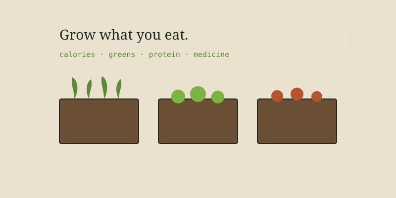

The entire reason I sell open-pollinated heirlooms and not hybrids comes down to one sentence: you can save the seed and it'll grow true next year. Buy a packet once, grow it well, save seed from your best plants, and that variety is yours for life. It's the most quietly radical thing a gardener can do — step off the buy-it-again treadmill entirely.
Seed saving has a reputation for being fussy and scientific. It isn't. Plants have been handing humans their seed for ten thousand years and want to keep doing it. You just need to know two things: whether a seed is 'wet' or 'dry,' and which plants cross with their neighbors.
Heirloom vs. hybrid — why it matters
An open-pollinated (heirloom) variety breeds true: its seed grows into the same plant. A hybrid (often labeled F1) is a one-time cross of two parents, and its seed scatters into a grab-bag of the grandparents — usually worse than either. You can save hybrid seed, but you can't count on what comes up. Every seed Texas Roots sends out is open-pollinated for exactly this reason.
Dry seeds: the easy ones
Beans, peas, lettuce, grains, okra, sunflowers, most herbs and flowers — these dry right on the plant and ask almost nothing of you. The technique is mostly patience.
Let it go past eating stage
Leave pods, heads, or seed stalks on the plant until they're brown, dry, and rattly. A green bean you'd eat is far too young to save; let those pods turn papery.
Harvest on a dry day
Pick when there's no dew or rain. Damp seed molds in storage faster than anything.
Thresh and winnow
Crush dry pods or rub seed heads between your hands to free the seed, then pour it back and forth between bowls in a light breeze to blow off the chaff.
Dry a week more indoors
Spread on a plate or screen out of sun for another week to drive off the last moisture. Seed should be hard enough that it doesn't dent under a fingernail.
Wet seeds: tomatoes, cucumbers, melons, squash
Seeds packed in wet flesh need that flesh removed, and tomatoes and cucumbers actually benefit from a short fermentation that mimics a fruit rotting on the ground. It smells bad for a few days and works beautifully.
Scoop seeds and pulp into a jar
Add a splash of water. For tomatoes and cucumbers, this gel-coated seed is what you'll ferment.
Ferment 2–4 days
Leave the jar on the counter, loosely covered. A mold raft forms on top — that's the point. It dissolves the germination-blocking gel and kills some seed-borne disease.
Rinse clean
Add water, stir, and pour off the floating pulp and dead seeds. The good, heavy seed sinks. Repeat until what's left is clean.
Dry hard on a plate
Spread on a ceramic plate (not paper — they stick) out of sun for a week or two until bone dry.
Melons, squash, and peppers skip the fermentation — just scoop, rinse the seeds clean of pulp, and dry them well. Easy.
The crossing problem — and how to dodge it
Here's the one thing that trips people up. Many plants cross-pollinate, so if two varieties of the same species flower near each other, the seed you save is a mix. Some families are worse than others.
| Crossing risk | Plants | What to do |
|---|---|---|
| Low — self-pollinating | Tomatoes, beans, peas, lettuce | Save freely; minimal separation needed |
| High — insect/wind crossed | Squash, cucumbers, melons, corn, brassicas | Grow one variety, or separate widely, or hand-pollinate and bag |
| Crosses across the garden | Brassicas (kale, cabbage, broccoli are one species) | Let only one of the group flower for seed each year |
For the beginner, the move is simple: start by saving the self-pollinators (tomatoes, beans, peas, lettuce). They come true with no effort and build your confidence. Tackle the cross-happy squash and corn once you understand the dance.
Storing seed so it lasts
Three enemies kill stored seed: heat, moisture, and light. Beat all three and most seed stays viable for years.
- Cool, dark, and dry — a closet, not a sunny shelf. The fridge is excellent if seed is fully dry first.
- Paper envelopes inside an airtight jar. Paper lets seed breathe; the jar keeps humidity out.
- A packet of rice or silica gel in the jar pulls down moisture.
- Label everything with variety and year. You will not remember. Nobody remembers.
Saved seed is the original heirloom. It carries your soil, your weather, and your choices forward into next year's garden.
The bigger picture
Seed saving is the backbone of real food security. A pantry of stored seed you grew yourself, adapted to your own ground, is worth more than any amount you could buy in a panic. Pair it with the rest of the skills in this almanac — soil building, water catching, preservation — and you've built something that doesn't depend on anyone else's supply chain. That's the whole point. And it's why I keep a copy of all this knowledge offline too, on a home server, so the how-to survives even if the internet doesn't.
Written by Jordan Polasek, founder of Texas Roots, from his greenhouse in El Campo, Texas. Free to share. If this helped, the best thanks is to grow something or pass it along.